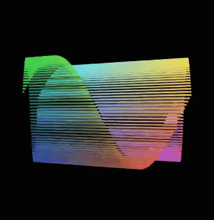
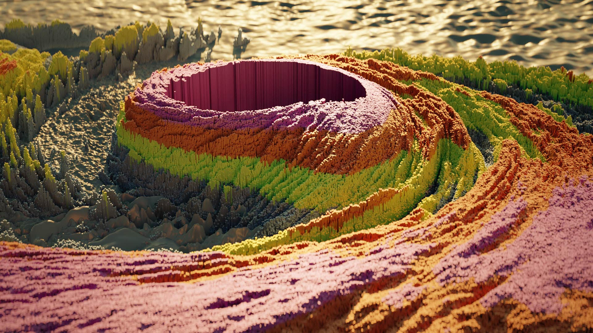
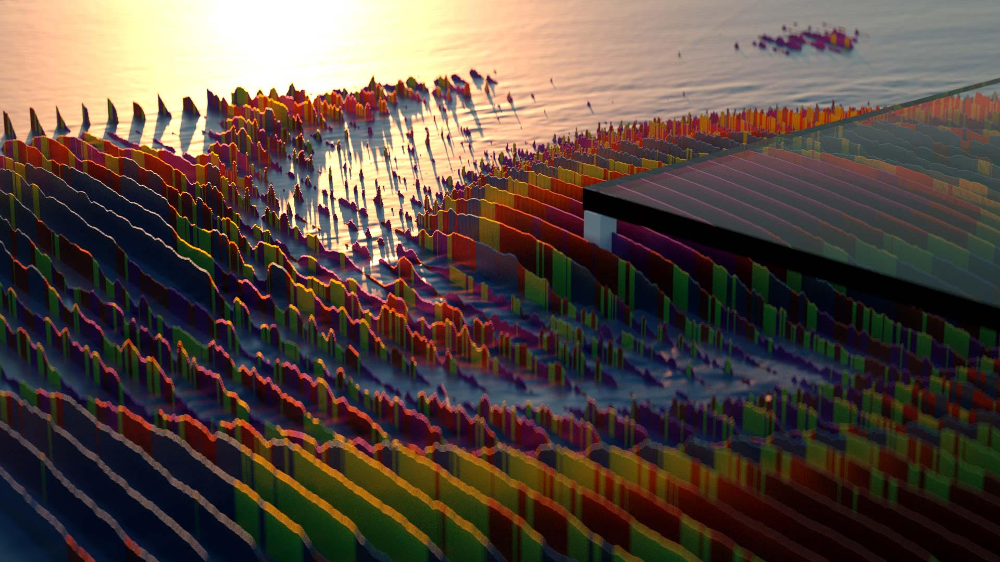
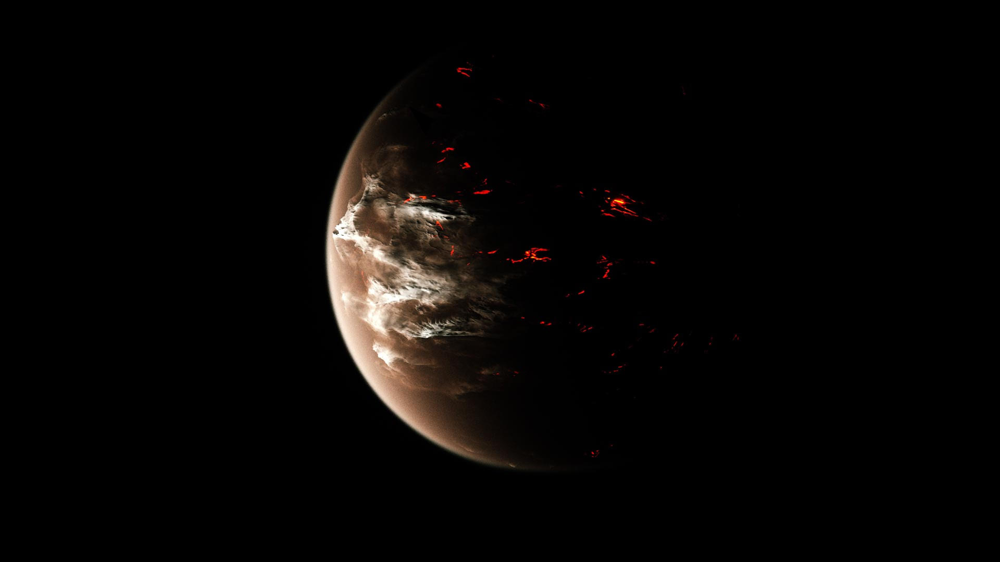
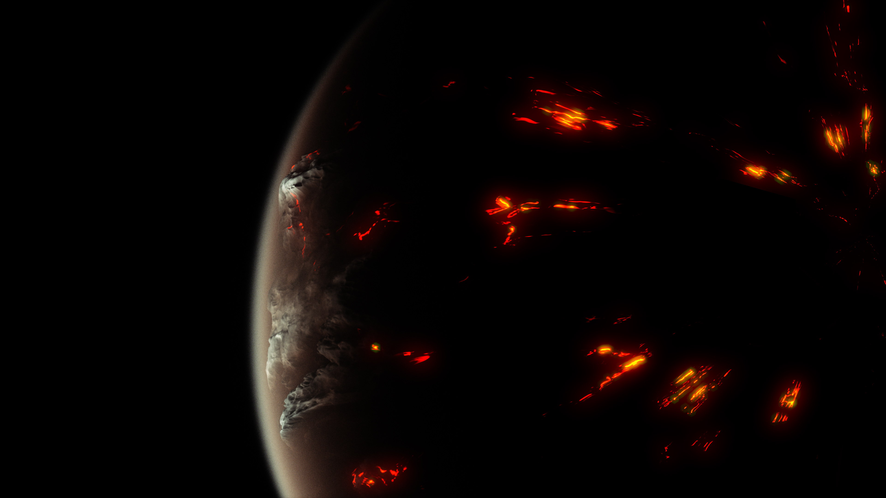
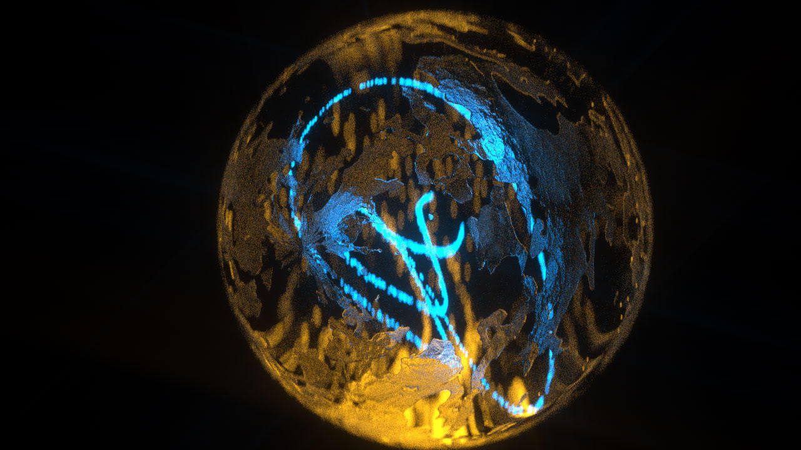

Visualizing a 3D grid of cubes through various functions in Unity
"How I came to love Mathf.Sin"



Visualizing partnership in Cinema 4D & AE
Visualizing a hurricane with Octane Scatter in Cinema 4D & AE
Based off of David Ariew's tutorial
 Visualizing displacement in Illustrator, Cinema 4D & AE
Based off of David Ariew's tutorial

Creating a planet with Octane Volume in Cinema 4D & AE
Based off of Mitch Myer's tutorial
 Visualizing particles in Cinema 4D & AE
This helped me become proficient in problem solving using a shader graph. I had to match the tutorial's "look" using a different renderer (Octane). Based off of X-Particle's tutorial
Creating a synthetic mothership in Cinema 4D & AE
Based off of Michael Rigleys tutorial (so, so amazing. purchase his course)